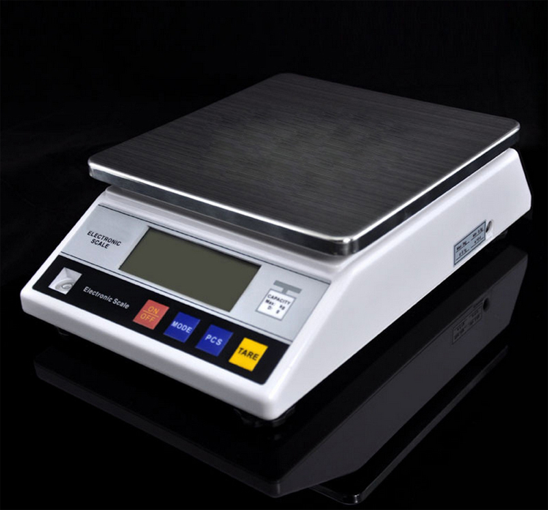

Things you need:
- 1. Digital Scales 
- 2. Mass (Certificated) : 100gr, 200gr, 500gr
- 3. Stopwatch
Procedures:
-
1. Scale Check
Scale check is a calibration procedure to determine whether a scale is suitable for calibration.
-
2. Rereadability
Rereadability is a calibration procedure to tell if the scale always came out with the same result for every mass tested.
-
3. Nominal Value Deviation
Scale check is a calibration procedure to tell the uncertainty of mass reading in a digital scales.
-
4. Load Effect in the middle
Load Effect is a calibration procedure to see if there is any difference when reading a mass in the middle of the scale compare to the other positions in the scale.
-
5. Scale Performance Limit
Scale check is a calibration procedure to tell the scale maximum readability.
-
6. Scale uncertainty
Scale uncertainty is an overall determination of the uncertainty of a scale, which value presented in a calibration certificate.
Scale Information

Make sure bla bla, some information has been bla bla bla
we can thing about this part later blablablablaaaa.